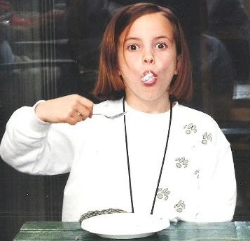

Winnie's Favorite Sweet Treats
Hi, I am Winnie! Yep, that's me below! I've been loving sweets since I was a kid. Every week I'll serve a new to-die-for treat. This week is all about chocolate. Enjoy!

Mississippi Mud Cake
What you need
- 4oz unsweetned chocolate
- 2 cups sugar
- 1 cup butter, softened
- 4 eggs
- 1 cup flour
- 1 teaspoon vanilla extract
- 2/3 cup semisweet chocolate chips
- 3 cups mini marshmallows
- 3/4 cup peanut butter
- 1 teaspoon canola oil
- 1/4 cup butter
- 3 tablespoons unsweetned cocoa
- 1/4 cup milk
- 2 cups confectioners' sugar
- 1/2 teaspon vanilla extract
What you do
- Preheat oven to 350°. Chop the chocolate into small pieces, place in a small heavy-bottomed pan and heat over low heat, stirring constantly, until melted. Remove from heat.
- Using an electric mixer, beat butter and 2 cups sugar at medium speed until light and fluffy. Add eggs one at a time, waiting until each egg is blended in before adding the next one.
- Add melted chocolate, and beat just until blended. Add flour and 1 teaspoon vanilla extract and beat on low speed until flour is moistened.
- Spread batter into 9X13-inch pan. Sprinkle semi-sweet chocolate chips on top and bake for 30 minutes if using a metal pan and slightly longer in a glass pyrex dish.
- Sprinkle marshmallows on top of brownies and return to oven on top rack for 1-2 minutes or until marshmallows are melted and lightly browned on top.
- Combine peanut butter and canola oil in a small bowl and microwave for 10 seconds on HIGH. Stir to combine and drizzle on top of marshmallow covered brownies.
- For chocolate frosting, combine ¼ butter, unsweetened cocoa, and milk in a saucepan and cook over medium heat, stirring constantly for 2-3 minutes.. Whisk in powdered sugar and vanilla extract until smooth. Drizzle on top of brownies.
Check back soon for more recipies! In the meantime, let's connect!